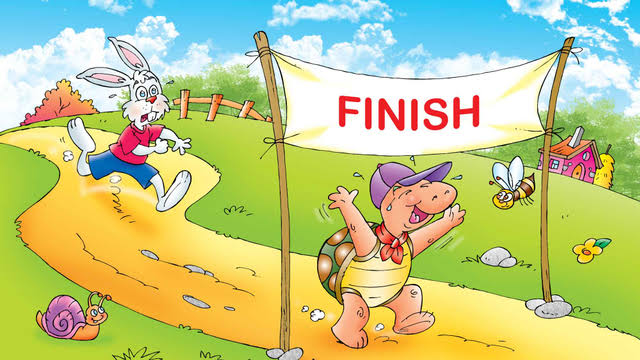

Si Kancil Dan Buaya Palsu

Suatu hari, di hutan yang lebat, si Kancil, hewan paling cerdik di hutan itu, berjalan-jalan mencari makanan. Dia merasa lapar setelah seharian beristirahat. Ketika dia berjalan di tepi sungai, dia melihat sebuah buaya yang sedang berjemur di tepi sungai.
"Selamat siang, Buaya Besar!" sapa Kancil dengan ramah.
Buaya itu mengangguk, "Selamat siang, Kancil. Apa yang membawamu ke sini?"
"Aku hanya mencari makanan untuk mengisi perutku yang kosong," jawab Kancil dengan sopan.
"Tentu saja, Kancil. Tapi hati-hati, sungai ini penuh dengan buaya lapar," peringat buaya itu.
"Terima kasih atas peringatannya, Buaya Besar," kata Kancil sambil tersenyum.
Kancil kemudian melanjutkan perjalanannya, tetapi dia tidak bisa mengabaikan peringatan Buaya Besar. Dia tahu bahwa dia harus tetap waspada.
Beberapa saat kemudian, Kancil melihat sesuatu yang aneh di tepi sungai. Itu adalah sebuah buaya yang tergeletak diam di tepi sungai, seolah-olah mati. Kancil curiga. Dia tahu bahwa buaya tidak akan hanya berbaring begitu saja tanpa alasan.
Kancil memutuskan untuk mendekati buaya itu dengan hati-hati. Ketika dia mendekat, dia mencium bau yang tidak wajar. Itu bukan bau buaya sungguhan, itu bau plastik!
"Tidak mungkin! Ini adalah buaya palsu!" pikir Kancil.
Tanpa ragu, Kancil melompat ke atas punggung buaya palsu itu dan melintasi sungai dengan aman. Dia tersenyum puas ketika dia melihat buaya sungguhan mengejarnya dari kejauhan, tetapi dia tahu dia telah mengalahkan musuhnya dengan kecerdikannya.
Sejak saat itu, Kancil belajar bahwa kecerdikan dan kewaspadaan adalah kunci untuk bertahan hidup di hutan yang berbahaya itu.
Petualangan Pinguin Penjelajah
Di sebuah pulau yang terletak di tengah Samudra Antartika, hiduplah seorang pinguin kecil yang bernama Pipi. Pipi adalah pinguin yang pemberani dan selalu ingin menjelajahi dunia di sekitarnya.
Suatu hari, ketika sedang bermain bersama teman-temannya di pantai, Pipi melihat sebuah kapal besar yang berlayar di kejauhan. Pipi merasa penasaran dan ingin tahu apa yang ada di luar pulau tersebut.
Tanpa pikir panjang, Pipi memutuskan untuk pergi menjelajahi dunia di luar pulau. Dia berpamitan kepada keluarga dan teman-temannya, lalu memulai petualangannya dengan berenang ke arah kapal besar itu.
Perjalanan Pipi tidaklah mudah. Dia harus melewati berbagai rintangan, seperti badai es dan hewan laut yang besar. Namun, dengan semangat dan keberaniannya, Pipi berhasil melewati semua itu.
Setelah berenang cukup jauh, Pipi akhirnya sampai di dekat kapal besar itu. Dia melompat ke atas kapal dan mulai menjelajahi setiap sudutnya. Pipi terpesona dengan segala hal yang dia temui di atas kapal tersebut.
Namun, tiba-tiba, Pipi mendengar suara seseorang yang memanggilnya. Ternyata, kapal itu adalah kapal penjelajah yang dipimpin oleh seorang penjelajah kutub terkenal. Penjelajah itu tersenyum ramah kepada Pipi dan meminta bantuan Pipi untuk menemukan harta karun yang hilang di Antartika.
Dengan senang hati, Pipi bergabung dengan penjelajah dan bersama-sama mereka menjelajahi Antartika. Mereka melewati gua-gua es yang gelap dan salju yang tebal, namun tidak ada yang bisa menghentikan semangat mereka.
Akhirnya, setelah petualangan yang panjang, mereka menemukan harta karun itu di sebuah gua es yang tersembunyi. Pipi merasa bangga karena telah membantu penjelajah tersebut, dan dia juga belajar banyak hal baru selama petualangan itu.
Setelah kembali ke pulau, Pipi menceritakan petualangannya kepada keluarga dan teman-temannya. Mereka semua terinspirasi oleh keberanian dan keteguhan hati Pipi, dan mereka berjanji untuk selalu mendukung impian dan petualangan Pipi di masa depan.
Dari hari itu, Pipi menjadi pinguin penjelajah yang terkenal di seluruh Samudra Antartika, dan kisah petualangannya selalu dikenang oleh semua yang mengenalinya.
Kura-Kura dan Perlumbaan Terakhir

Dahulu kala, di sebuah hutan yang hijau dan rimbun, hiduplah seekor kura-kura yang bernama Timmy. Timmy adalah kura-kura yang sangat suka berlumba. Setiap hari, dia akan berlatih di hutan bersama rakan-rakannya.
Suatu hari, Timmy mendengar tentang perlumbaan terbesar yang akan diadakan di hutan itu. Perlumbaan itu dikenali sebagai "Perlumbaan Hutan Hati". Timmy sangat bersemangat untuk menyertai perlumbaan itu. Dia mula berlatih dengan lebih gigih setiap hari.
Apabila hari perlumbaan tiba, Timmy bersiap sedia dengan penuh keyakinan. Dia berdiri di garis permulaan bersama kura-kura lain yang turut menyertai perlumbaan. Perlumbaan dimulakan, dan semua kura-kura meloncat dengan pantas.
Timmy berjalan dengan tekun, melepasi rintangan dan menjelajahi hutan dengan penuh semangat. Walaupun dia tidak secepat kelajuan kura-kura lain, dia tidak menyerah. Dia terus berlari dengan tekun.
Di tengah-tengah perlumbaan, Timmy melihat seekor tupai yang terjatuh dari pokok besar. Tanpa berfikir panjang, Timmy menghampiri tupai itu dan membantunya bangun. "Terima kasih, Timmy!" ucap tupai dengan gembira sebelum melompat pergi.
Setelah membantu tupai, Timmy kini berada di belakang dalam perlumbaan. Namun, dia tidak mengalah. Dia meneruskan perjalanan dengan semangat yang lebih tinggi.
Akhirnya, Timmy tiba di garisan penamat. Walaupun dia bukan yang pertama tiba, dia merasa amat bangga dengan usahanya. Semua haiwan di hutan memberikan tepukan gemuruh untuk Timmy kerana keberanian dan kebaikannya.
Walaupun dia tidak memenangi perlumbaan, Timmy belajar bahawa yang penting bukanlah menang, tetapi bagaimana kita bersikap baik kepada orang lain di sepanjang perjalanan kita. Dan dari hari itu, Timmy terus hidup dengan semangat yang penuh dan menjadi contoh yang baik untuk semua haiwan di hutan.
Petualangan Semut Satria
.jpeg)
Di sebuah ladang yang subur, terdapat koloni semut yang hidup bahagia di bawah sinar mentari. Di dalam koloni itu, terdapat seorang semut bernama Andy. Andy adalah semut yang sangat berani dan selalu ingin mencari petualangan.
Suatu hari, ketika Andy sedang menjelajah ladang, dia mendengar suara panggilan dari arah yang jauh. Dia segera berlari menuju suara tersebut dan tiba di hadapan sebatang pokok yang besar. Di atas daun pokok itu, terdapat seekor burung kecil yang terperangkap dalam jaring laba-laba.
Tanpa berfikir panjang, Andy berlari ke arah burung itu. Dengan gigih, dia mengunyah jaring laba-laba itu hingga burung itu dapat terbang bebas. Burung kecil itu terbang beredar sekeliling Andy, menunjukkan rasa terima kasihnya.
"Terima kasih, Andy!" ucap burung itu sebelum terbang pergi. Andy tersenyum puas. Dia merasa sangat gembira dapat membantu makhluk lain.
Tetapi petualangan belum berakhir. Andy terus menjelajah ladang dan mendapati seekor kumbang yang terjatuh ke dalam sungai kecil. Tanpa ragu, Andy terjun ke dalam air dan menarik kumbang itu ke tepi sungai dengan susah payah.
Kumbang itu menggelengkan tubuhnya, menyingkirkan air dari badannya, dan tersenyum kepada Andy. "Terima kasih, Andy! Kamu adalah seorang semut yang hebat!" ucap kumbang itu dengan penuh terima kasih sebelum terbang pergi.
Andy merasa amat bangga dengan dirinya sendiri. Dia belajar bahawa meskipun dia hanya seorang semut kecil, dia boleh membuat perbezaan yang besar dengan tindakan kecilnya. Dari hari itu, Andy bersumpah untuk sentiasa membantu makhluk lain dan menjadi pahlawan bagi semua yang memerlukan pertolongan.<